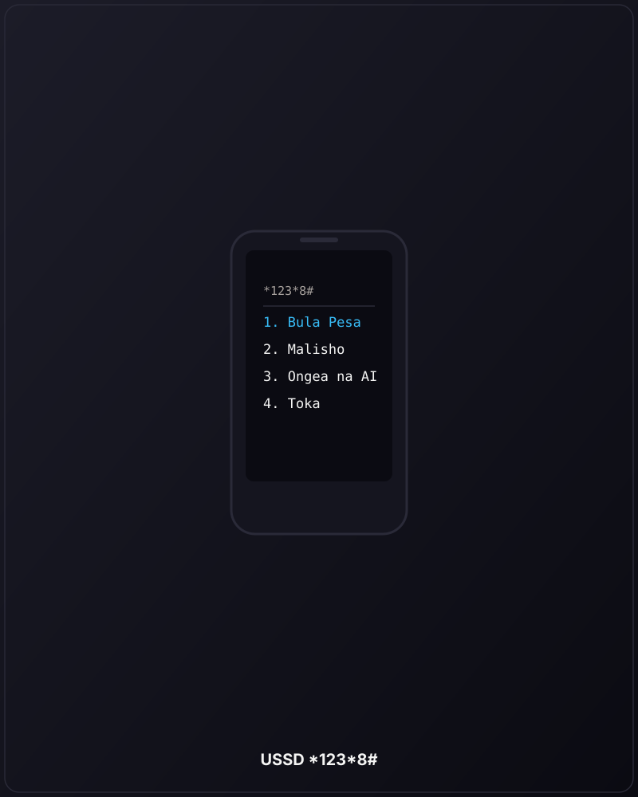
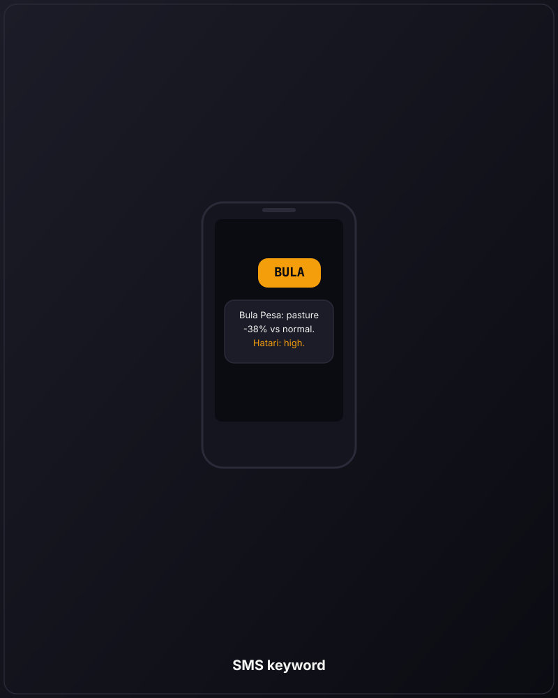

Meet her on the phone she already has.
In the language she speaks.
No app. No data plan. No literacy needed. Three ways to reach ArdaLink — voice call, USSD menu, or a single keyword SMS — and she picks whichever fits.
For the deep conversations.
We call her when the satellite sees trouble. She picks up. We talk — about her cows, her pasture, her water. She answers in Swahili or English, and the conversation flows naturally.
- Real conversation, not a recorded message
- Speaks the herder's language
- Works on any phone, even 2G


*123*8#
For the quick check.
Three taps and she has the answer. No data plan needed. The menu is bilingual, the screens are short, and the whole thing fits on a 2G phone.
- 1 — the drought brief right now
- 2 — the closest water point
- 3 — ask ArdaLink to call her
For the lightest touch.
One word, one reply, one segment. BULA for
the brief. MALISHO for water points.
ONGEA to ask us to call. Works on every
phone ever made.
- One SMS in, one SMS out
- Single 160-character segment
- Fits the keypad flow she already knows

Swahili and English today. Borana, Turkana, Samburu next.
A herder in Garbatulla answers her phone in Borana, not Swahili. We need to meet her there. We're recording and training voices in four more languages — with native speakers as our guides.
🇰🇪 Swahili
First-class today.
🇬🇧 English
First-class today.
🐂 Borana
Recording & training.
🐪 Turkana
Recording & training.
🦁 Samburu
Recording & training.
🌊 Somali
Recording & training.